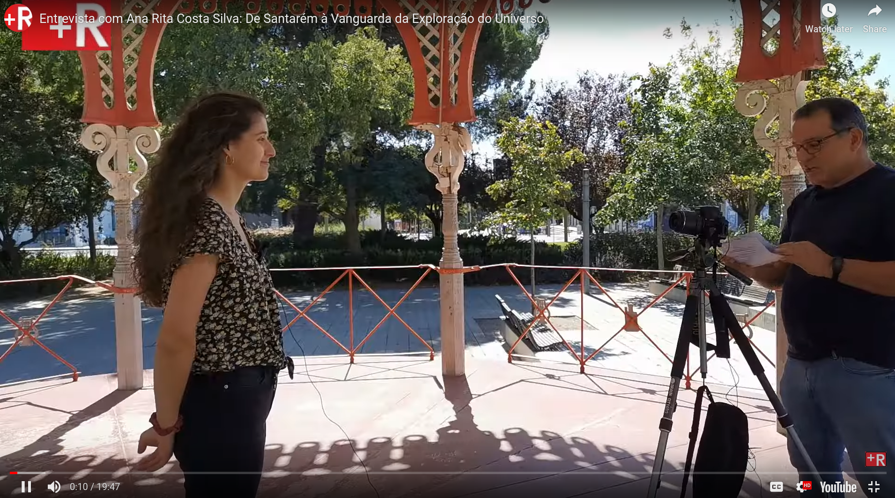
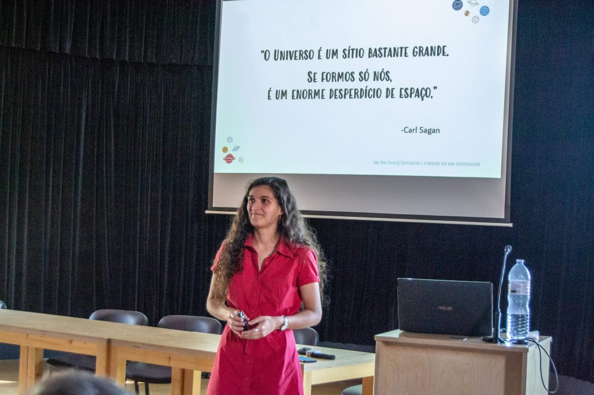
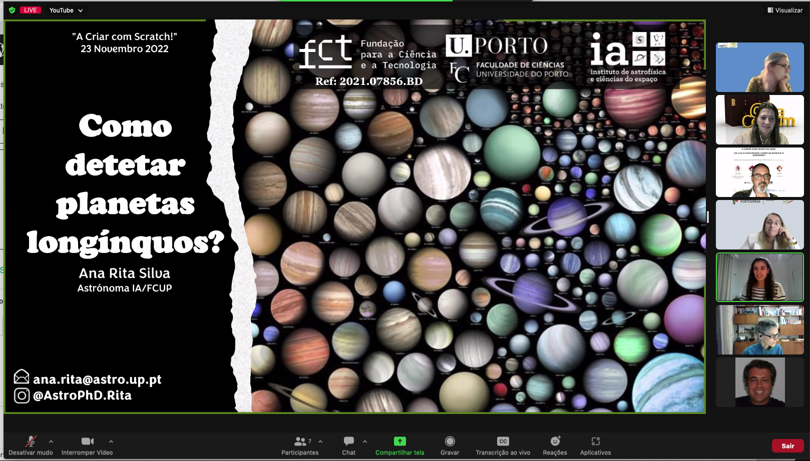
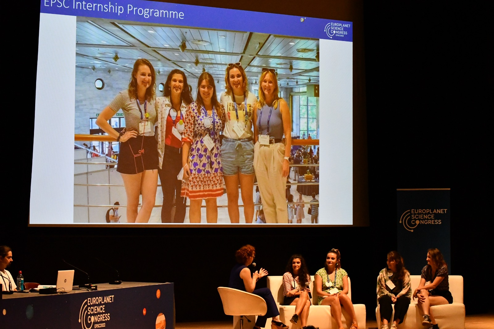

Little Rita pretending to be the Earth at Constância Science Centre.
Science communication events played a really important part in shaping the interests and personality of little Rita. I'm forever grateful to the science communicators for putting on beautiful and enganging events (and to my parents for taking me there!).
Ever since my Bachelor days, I have dedicated large portions of my time to astronomy outreach and communication. My most impactful contribution has perhaps come through Instagram, where I document the life of a Portuguese astronomer and PhD candidate (see @astrophd.rita). The main objetive of this account is to reach young audiences who are interested in pursuing careers in science, but probably do not have access to much information about said careers and lifestyles. Social media is a very accessible medium through which teenagers and young adults can interact with scientists and scientific content, to inspire them and help guide their choices.
I leave below a non-exhaustive list of my outreach activities over the last couple of years:
- Conference contributions:
- Poster at International Astronomical Union General Assembly 2024
"Astronomy communication and influencing via Instagram"
- ADS/NASA link
- Talk at Communicating Astronomy with the Public 2024
"Astronomy communication and influencing via Instagram"
- Talk at National Meeting of Astronomy and Astrophysics, Portugal
"Instagram como ferramenta para comunicação de ciência e influência para a ciência"
- Podcast participations:
- Open Nights at Bayfordbury Observatory, University of Hertfordshire (telescope tours and laboratory experiments)
- Talks at Espaço Vai à Escola (ESERO & Ciência Viva, "Space Goes to School")
- Vlogs of visits to La Silla and Paranal Observatories (ESO) - link
- European Researchers' Night 2022 & 2023
- Social Media Intern at Europlanet Society Congress 2022
- Tutor at Astronomy Summer School for high schoolers of the Junior University of Porto 2022 & 2023
- Finalist of "3 Minute Thesis" competition at University of Porto
- 15+ public talks about exoplanets, spectroscopy, observational astronomy, visits to large observatories, and careers in astronomy
Features and online records
The links below will take you to some recordings of talks and interviews that I have done.

(PT)

(PT)

(PT) Minute 19. Coding competition for young children.

(ENG) Minute 20. Europlanet Society Congress 2022, in Granada, Spain.